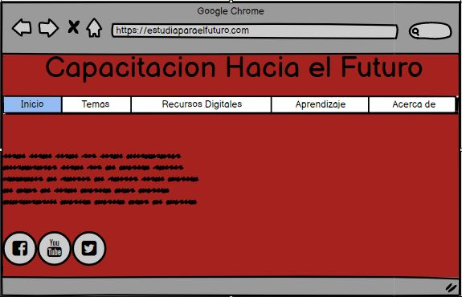

Etiquetas Básicas de HTML,atributos y valores
Los elementos en HTML tienen atributos; estos son valores adicionales
que configuran los elementos o ajustan su comportamiento de diversas formas
para cumplir los criterios de los usuarios.
Referencias APA
Celaya Luna, A. (2014). Creación de páginas web: HTML 5 (pág. 1 a 60).Recuperado de https://elibro-net.bibliotecavirtual.unad.edu.co/es/ereader/unad/56045
